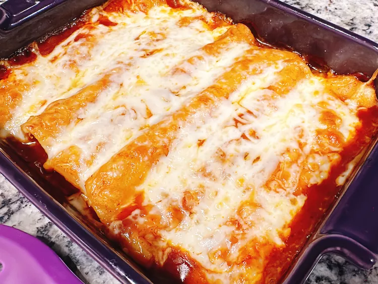

Easy Rotiserrie Chicken Enchiladas

Description
Easy Rotisserie Chicken Enchiladas are a delicious and convenient dish perfect for busy weeknights or casual gatherings. This recipe combines tender, shredded rotisserie chicken with creamy sour cream, zesty green chiles, and flavorful enchilada sauce. The filling is generously wrapped in soft flour tortillas, then topped with even more enchilada sauce and a generous layer of melted cheese, creating a mouthwatering, cheesy, and slightly spicy casserole that is both comforting and satisfying.
Baking these enchiladas to golden perfection allows the flavors to meld beautifully, while the melted cheese adds a luscious, gooey texture. The dish is versatile, allowing for easy customization with additional ingredients like black beans, corn, or diced tomatoes to suit your taste. Serve these enchiladas with a side of Spanish rice, refried beans, or a fresh green salad for a complete and hearty meal that will surely become a family favorite.
Ingredients
- 1 1/2 tablespoons canola oil
- 6 corn tortillas
- 1 can red enchilada sauce, divided
- 1 cup shredded rotisserie chicken
- 2 teaspoons dry enchilada seasoning
- 1 cup shredded Monterey Jack cheese, divided
Steps
- Preheat the oven to 375 degrees F (190 degrees C). Place a wire rack on a baking sheet.
- Heat oil in a heavy skillet. Quickly fry tortillas in the hot oil, about 5 seconds per side. Remove tortillas to the wire rack to drain. Dab excess oil with a paper towel.
- Pour a thin layer of enchilada sauce into the bottom of a casserole dish.
- Place shredded chicken in a bowl, sprinkle enchilada seasoning over chicken; toss to combine. Place 3 tablespoons chicken along center of each enchilada. Sprinkle with 1 1/2 tablespoons cheese. Roll up to form enchiladas. Place enchiladas seam side down in the casserole dish. Top with remaining enchilada sauce and sprinkle evenly with cheese. Cover with aluminum foil.
- Bake in the preheated oven for 25 minutes. Turn on the oven's broiler, remove foil from enchiladas, and broil until cheese is melted and golden, about 5 minutes.